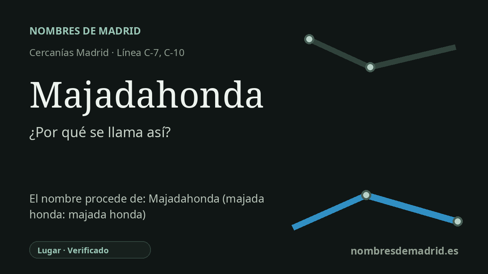

Publicado el · Investigación de Nombres de Madrid · Cómo verificamos cada origen · 8 fuentes consultadas
Respuesta rápida
La estación de Majadahonda debe su nombre al municipio al que sirve. El topónimo une majada, lugar donde se recoge de noche el ganado y se albergan los pastores, con honda, 'profunda' o 'más baja que el terreno circundante'.
La historia del nombre
La estación de Majadahonda toma su nombre directamente del municipio de Majadahonda, al oeste de Madrid. Desde el punto de vista del transporte, es un nombre de estación derivado de un lugar: identifica la localidad a la que sirve, no a una persona ni a un acontecimiento.
El topónimo antiguo que hay detrás del nombre municipal es especialmente transparente. Toponomasticon Hispaniae analiza Majadahonda como la unión de **majada**, lugar donde se recoge de noche el ganado y se albergan los pastores, y **honda**, es decir, profunda o situada más baja que el terreno de alrededor. Dicho de forma sencilla, el nombre alude a una majada honda o situada en una hondonada: un topónimo pastoril ligado al ganado, al relieve y al poblamiento.
La historia local da a esa explicación lingüística un relato de asentamiento. El Ayuntamiento de Majadahonda indica que el nacimiento del pueblo no está del todo claro, pero que se cree que pastores segovianos se establecieron en la zona hacia el siglo XIII y levantaron unas pocas cabañas, formando una modesta aldea llamada Majada-Honda. El propio relato municipal introduce cautela: algunos hallazgos de un poblado romano-visigodo podrían señalar una ocupación humana anterior.
El nombre está documentado mucho antes de la ciudad residencial y ferroviaria actual. Toponomasticon Hispaniae recoge formas como Majadahonda en documentos de finales del siglo XV, un pasaje de las Relaciones Topográficas hacia 1575 que explica el origen del pueblo en una majada honda, y grafías posteriores como Maxadahonda, Majalaonda y Majadaonda. Esas variantes reflejan oscilaciones ortográficas históricas, no un origen distinto.
La estación actual de Cercanías pertenece a las líneas C-7 y C-10. La información de Renfe indica que la estación actual de Majadahonda se abrió en 1989 y sustituyó al apeadero clausurado de El Plantío; CRTM y Adif la registran hoy con el nombre Majadahonda. Por eso la etimología es muy segura, mientras que el relato concreto de fundación en el siglo XIII debe tratarse como una tradición local respaldada, pero no con el mismo grado de prueba que el origen lingüístico del topónimo.